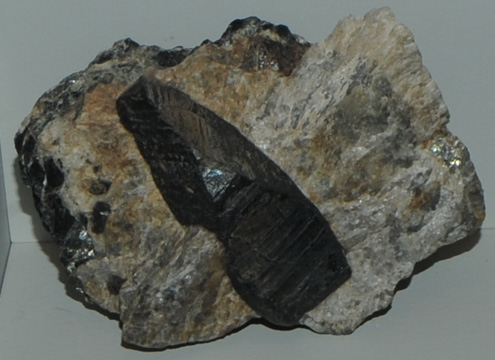

|

| Be2FeY2Si2O10
This sample of gadolinite is displayed in the Smithsonian Museum of Natural History. Gadolinite is a silicate mineral of yttrium and berylliumwith the composition Be2FeY2Si2O10. The sample at left is about 15 cm across and is from Saetersdalen, Norway. The mineral is named after J. Gadolin, the discoverer of yttrium. These samples are labeled gadolinite-(Y) because of the dominance of yttrium in the composition.
|